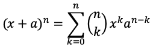

For readers that don't know what LaTeX is, a brief primer.
TeX, pronounced "tech", is a typesetting system developed by Donald Knuth in the 1970s. LaTeX, pronounced "lay-tech", is a macro package that allows for documents to be written more easily in TeX.
The levels of TeX are as follows (paraphrased from the original):
- Distributions: Large, coherent collections of TeX-related software to be downloaded and installed. When someone says “I need to install TeX on my machine”, they're usually looking for a distribution.
- Front ends and editors: Used to create a document file. Some (e.g., TeXShop) are devoted specifically to TeX, others (e.g., Emacs) can be used to edit any sort of file. TeX documents are independent of any particular editor; the TeX typesetting program itself does not include an editor.
- Engines: Executable binaries which implement different TeX variants.
- Formats: TeX-based languages in which one actually writes documents.
- Packages: These are add-ons to the basic TeX system, developed independently, providing additional typesetting features, fonts, documentation, etc. A package might or might not work with any given format and/or engine; for example, many are designed specifically for LaTeX, but there are plenty of others, too. The CTAN sites provide access to the vast majority of packages in the TeX world; CTAN is generally the source used by the distributions.
In short, LaTeX allows for a) beautiful documents to be written, and b) the user to be in control of every aspect of it. Want to add a coffee stain to a page? LaTeX's got you covered. Want to put in a circuit diagram? Easy. Want your equations to not look like absolute garbage? LaTeX is your guy. Want to be made fun of and belittled in front of all of your closest friends, family, and colleagues at your first public conference because your paper formatting is ugly? Word's the way to go!
Yes, I am absolutely biased, but for good reason, as will be shown.
First, let's look at equations in both LaTeX and Word:
Can you guess which one is Word and which is LaTeX? The answer should be glaringly obvious, but can be revealed by hovering over the black box.
The differences in quality are stark: